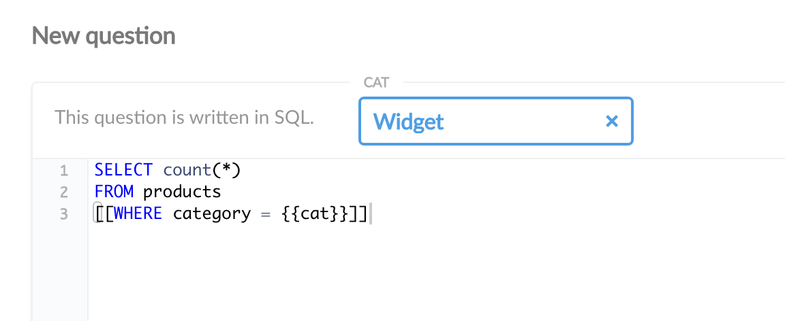
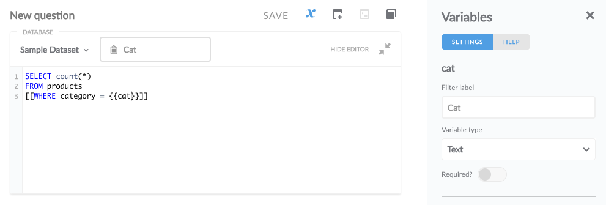

Metabase. Параметры в SQL
Перевод страницы документации Metabase SQL Parametersopen in new window.
Переменные, добавленные в SQL запросы, позволяют динамически заменять значения в запросе используя виджеты или через URL запроса.

Настройки переменных появляются в панели Variables редактора запросов после добавления переменных.

Определение переменной
Добавление в запрос создаёт переменную с названием variable_name. Тип переменной и её поведение меняется на боковой панели. Все типы переменных кроме field filter добавляют соответствующий виджет в вопрос. Когда в виджите выбрано значение, это значение заменяет соответствующую переменную в SQL. Если в вопросе несколько фильтров, то их можно перетащить и изменить их порядок.
Этот пример определяет переменную cat позволяющую динамически изменять условие WHERE:
SELECT count(*)
FROM products
WHERE category = {{cat}}
2
3
Тип переменной Field Filter
Установка переменной типа field filter позволяет вам сопоставить её с любым полем в таблице текущей базы данных и отображает выпадающий список со значениями выбранного поля. Переменные field filter также позволяют соединить SQL-запрос с фильтром дашборда если вопрос помещён на дашборд.
Переменные field filter вставляют SQL похожий на тот что генерируется графическим построителем запросов, когда добавляется фильтр по существующему столбцу. Это полезно потому, что позволяет вам делать такие вещи как вставка динамического диапазона дат в SQL. Переменная с типом field filter обязательно должна быть привязана к столбцу и находится внутри выражения WHERE.
Примечание: псевдонимы таблиц не поддерживаются.
Пример:
SELECT count(*)
FROM products
WHERE {{created_at}}
2
3
Создание фильтров SQL-вопроса используя переменные field filter
Сперва, вставьте переменную в SQL, например, . Затем, в боковой панели выберите тип Field Filter и выберите поле для сопоставления с переменной. Чтобы отобразился виджет фильтра, тип поля установленный в секции Data Model панели администрирования должен быть одним из следующих:
- Category
- City
- Entity Key
- Entity Name
- Foreign Key
- State
- UNIX Timestamp (Seconds)
- UNIX Timestamp (Milliseconds)
- ZIP or Postal Code
Поле может быть также датой с временем (можно оставить как No special type в модели данных).
Вы увидите выпадающий список подписанный Widget, который позволяет вам выбрать тип виджета подходящего для вопроса. Это особенно полезно для полей с типом дата и время. Значение None скрывает виджет. Примечание: если настроек виджета нет, проверьте что поле принадлежит к одному из указанных выше типов, и затем попробуйте вручную синхронизировать базу данных из секции Database панели администратора чтобы заставить Metabase сканировать и кешировать значения поля.
Виджет не отображается если переменная связана с полем помеченным как:
- Avatar Image URL
- Description
- Enum
- Field containing JSON
- Image URL
- Number
- Latitude
- Longitude
- URL
Значение по умолчанию
Если вы введёте значение по умолчанию для фильтра, это значение будет выбрано в фильтре при открытии вопроса. Если вы очистите фильтр, то значение не будет передано в переменную, даже значение по умолчанию. Значение по умолчанию не оказывает эффект на поведение SQL-вопроса при просмотре дашборда.
Значение по умолчанию в запросе
Значение по умолчанию можно определить напрямую в запросе, полезно для сложных значений по умолчанию.
Пример с текущей датой:
SELECT p.*
FROM products p
WHERE p.createdAt = [[ {{dateOfCreation}} #]]CURRENT_DATE()
2
3
Необязательное выражение
Необязательные выражения в запросе добавляются так: [[скобки вокруг ]]. Если переменная получает значение, то полное выражение помещается в запрос. Если нет, то полное выражение игнорируется.
В этом примере, если значение не будет помещено в cat из виджета или URL, то запрос вернёт все строки из таблицы products. Но если в cat будет значение, то запрос выберет только продукты выбранной в виджете категории.
SELECT count(*)
FROM products
[[WHERE category = {{cat}}]]
2
3
При использовании нескольких необязательных выражений вы должны добавить как минимум одно обычное выражение WHERE а за ним необязательные выражения начинающиеся с AND.
Пример:
SELECT count(*)
FROM products
WHERE True
[[AND id = {{id}}]]
[[AND category = {{category}}]]
2
3
4
5
Когда используется field filter, название столбца не должно включаться в SQL. Вместо этого, переменная должна быть связана с полем в боковой панели.
Пример:
SELECT count(*)
FROM products
WHERE True
[[AND {{id}}]]
[[AND {{category}}]]
2
3
4
5
Далее: Автоматическое x-ray исследование
Изучите как просто и быстро смотреть автоматические исследования данных с мощной функцией Metabase x-ray.